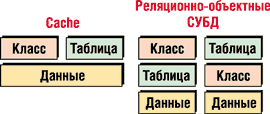
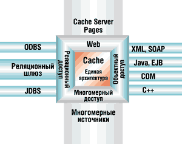
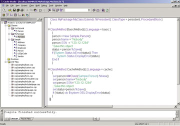

Николай Кречетов,
глава московского представительства InterSystems
Олег Сиротюк,
менеджер по образовательным программам InterSystems,
info@intersystems.ru
Путь к оптимальной модели данных
Специалисты давно уже говорят о кризисе традиционных моделей данных, к которым сейчас можно отнести не только реляционную, но и объектно-ориентированную модель. При этом отмечается [6], что серьезные ограничения на реляционную модель накладывает лежащая в ее основе примитивная структура данных. Такая структура неэффективна для реализации современных информационных систем, работающих с разнородными данными и динамически изменяющимися структурами данных. К другим серьезным ограничениям реляционных баз данных относят их довольно слабые возможности по части представления семантики приложений, а также недостаточную связь между концептуальным и физическим уровнями представления данных, что приводит к "скачкам" между фазами разработки программного обеспечения [3, 10].
Сейчас растет популярность объектного подхода к проектированию систем, при разработке ПО все чаще используется объектно-ориентированная технология. Это поднимает статус объектно-ориентированных СУБД (ООСУБД) как средств, позволяющих наиболее естественным образом хранить объекты и манипулировать ими [7, 11]. Объектно-ориентированные БД (ООБД) имеют ряд преимуществ по сравнению с реляционными. В первую очередь здесь следует упомянуть инкапсуляцию логики и данных, а также поддержку сложных типов данных (ADT). Но существующие ООСУБД имеют и ряд ограничений. В числе серьезных ограничений называют недостаточную формализацию объектной модели, неразвитость языка выборки и анализа данных OQL (Object Query Language), декларируемого комитетом ODMG (Object Database Management Group), а также крайне невысокую производительность и масштабируемость.
Симбиоз реляционной и объектной модели в идеале должен взять лучшее от каждой модели и свести к минимуму их ограничения. К настоящему времени накоплен огромный багаж разработок на базе традиционных моделей данных, и гибридная модель должна облегчить процесс миграции существующих систем и при этом улучшить требуемые показатели. Хорошую гибридную модель можно уподобить самолету - механизм состоит из частей (традиционные модели данных), которые по своей природе стремятся упасть на землю, но, работая согласованно, преодолевают эту тенденцию.
На рынке существует несколько СУБД, реализующих гибридную модель, условно их можно разделить на два класса. К первому относятся реляционно-объектные (объектно-реляционные) СУБД, в которых имеется объектная или реляционная надстройка над соответственно реляционной или объектной моделью данных. Данную модель активно используют традиционные поставщики реляционных СУБД.
Второй гибридный класс - постреляционные СУБД. Они не строятся ни на реляционной, ни на объектной модели, однако позволяют представлять хранимые данные в виде как реляционных таблиц, так и классов объектов. К этому классу СУБД относится и Cache.
Обоим типам гибридных систем свойственны ненормализованная модель данных, инкапсулированная семантика приложений и множество внешних интерфейсов, как объектных, так и реляционных.
Объектная или реляционная надстройка над существующим ядром системы позволяет обойти часть ограничений, присущих ядру. Однако в этом случае складывается многоуровневая архитектура (рис. 1), что отрицательно влияет на производительность надстроек и утяжеляет само ядро системы. Кроме того, реализация в надстройке модели, дополняющей модели ядра, в большинстве случаев ограничена и не соответствует стандартам на реализацию модели (SQL92, SQL99) или рекомендациям комитетов по стандартизации (ODMG).
|  | Рис. 1. Сравнение Сache и реляционно-объектных архитектур.
|
Ядро постреляционных СУБД не использует ни реляционную, ни объектную схему - обычно оно построено на базе сетевой или иерархической модели. Зачем это делается? Известно, что реализации сетевой и в особенности иерархической модели БД отличаются высокой скоростью работы с данными и простотой масштабируемости. Они отлично подходят для реализации промышленных информационных систем [5]. Более того, гибкость языковой среды иерархических БД позволяет весьма эффективно воплощать ту или иную модель данных. Поэтому в качестве основы для реляционных и объектных БД многие специалисты рекомендуют использовать иерархическую БД [5].
В постреляционных СУБД применяются механизмы, которые представляют массивы данных (программы - это тоже данные) иерархического или сетевого ядра системы в виде классов объектов и реляционных таблиц, обеспечивая тем самым поддержку обеих традиционных моделей. Однако объектное и реляционное представления в постреляционных СУБД реализованы поверх быстрого иерархического или сетевого ядра и лежат на одном логическом уровне, и это существенно отличает их от "реляционно-объектных" СУБД.
Знакомство с Cache
В основе архитектуры постреляционной СУБД Cache (рис. 2) лежит высокопроизводительное многомерное ядро, ориентированное на работу с транзакциями.
|  | Рис. 2. Архитектура СУБД Cache.
|
Все данные и программы Cache хранятся в многомерных разреженных массивах данных. Количество индексов у массива может быть произвольным, что позволяет описать и хранить произвольно сложную структуру данных.
"Постреляционность" Cache реализована с помощью так называемой единой архитектуры данных. Она предусматривает единое описание объектов и таблиц, отображаемых непосредственно на многомерные структуры ядра базы данных. Ядро ориентировано на обработку транзакций [2]. Серверы Cache Objects и Cache SQL позволяют представить хранимые массивы данных в виде классов объектов и реляционных таблиц. Объектная модель Cache соответствует основным требованиям стандартов ODMG. Реляционное представление удовлетворяет стандарту SQL92 и содержит ряд расширений. При этом изменение в одном представлении данных (объектном или реляционном) автоматически приводит к изменению другого.
Серверы объектного и реляционного представления данных находятся на одном логическом уровне, что обеспечивает высокую производительность реализации обеих моделей и позволяет дополнить стандартную объектную модель запросами на базе SQL, а сам механизм SQL - объектными расширениями. Для задач, требующих максимальной производительности при работе с большими объемами данных, есть возможность напрямую использовать хранимые массивы данных ядра Cache. Таким образом разработчик получает преимущества сразу трех моделей в рамках одного приложения.
Наряду с собственным сервером приложений Cache включает множество интерфейсов к внешним инструментам разработки и проектирования приложений, работающих как по реляционной (ODBC, JDBC), так и по объектно-ориентированной технологии (ActiveX, XML, COM и т. д.).
Рассмотрим подробнее основные функциональные возможности сервера приложений СУБД Cache, а также Web-технологию CSP и интерфейсы для XML и SOAP.
Сервер приложений
Сервер приложений Cache 5 предоставляет для реализации бизнес-логики серверных приложений два языка - Cache Object Script и Cache Basic (появился в версии Cache 5).
По статистике на языке Basic в мире умеют программировать более 50% разработчиков. Реализованный в Cache 5 Basic аналогичен VBScript и призван облегчить процесс переноса унаследованных Basic-приложений на сервер Cache, упростить знакомство новых разработчиков с сервером приложений Cache.
Cache Object Script (COS) - компактный язык программирования, включающий около 30 команд и 60 функций. Он имеет мощные средства обработки строк и управления базой данных с поддержкой многопользовательского доступа и встроенной многозадачности. Хотя в языке имеется относительно маленький набор команд, он обеспечивает мощь и гибкость языка третьего поколения (3GL). Следует отметить, что COS не включает элементов для управления ресурсами (таких, как управление памятью), требуемых другими 3GL-языками. Все данные в COS являются переменными по длине, бестиповыми и полностью динамическими. Язык не требует определять память под данные, специфицировать массивы, определять длину записи или поля; нет и требований, касающихся декларирования или переопределения типа данных. Память под данные выделяется автоматически и только тогда, когда это необходимо.
Оба встроенных языка располагают всеми необходимыми командами для работы c тремя моделями данных сервера БД Cache и обычно используются для реализации методов классов Cache, хранимых процедур и триггеров SQL. Следует отметить, что код методов одного класса может быть написан на разных языках. Пример кода на COS и Cache Basic приведен на рис. 3.
|  | Рис. 3. Методы на языках COS и Cache Basic в Cache Studio.
|
Технология CSP
В сервер приложений Cache встроена развитая технология создания корпоративных Web-приложений Cache Server Pages (CSP). Она работает во многом аналогично другим средствам разработки Web-приложений, таким, как JSP и ASP, однако архитектурно кое в чем существенно отличается от них.
Серверные страницы Cache хранятся в виде текстовых файлов, содержащих, помимо стандартных тегов HTML, специальные теги CSP для работы с данными БД Cache и реализации логики приложения. При запросе на CSP-страницу соответствующий компонент на Web-сервере перенаправляет запрос на один из определенных серверов Cache, который в свою очередь обрабатывает запрос, компилирует и отсылает ответ в формате HTML [11].
Несмотря на сходство с другими технологиями, архитектура CSP имеет ряд явных преимуществ. Главное из них - тесная интеграция с сервером приложений Cache и сервером БД Cache. Такой подход предоставляет CSP доступ ко всем функциональным возможностям сервера приложений Cache, сокращает трафик при обмене данными между Web-сервером и сервером БД. Производительность существенно повышается за счет непосредственного доступа к данным без использования дополнительных транспортных протоколов типа ODBC, JDBC, TCP/IP и других.
Другое преимущество CSP - возможность компиляции страниц CSP в полноценные классы Cache, к которым можно применить все характеристики объектной модели Cache. А это означает полиморфизм, множественное наследование, инкапсуляцию. Кроме того, в Cache на системном уровне (в виде классов) реализовано большинство Интернет- и интранет-протоколов (SMTP, POP3, FTP и т. д.), к которым приложение CSP имеет доступ.
Помимо возможности встраивания кода COS или Cache Basic в текст Web-страницы CSP реализует технологию "гиперсобытий", которая позволяет значительно сократить трафик обмена данными между браузером, Web-сервером и сервером Cache. Используя технологию гиперсобытий, можно вызвать из браузера функцию на сервере Cache, получить и обработать ответ и при этом не перезагружать вызывающую страницу целиком. Для использования технологии гиперсобытий не нужно предварительно настраивать браузер: технология использует такие стандартные возможности HTML, как IFRAME и подгрузка апплетов Java с сервера Cache.
Для создания Web-приложений по модульному принципу, с возможностью повторного использования кода, предоставляется технология создания пользовательских тегов CSP. Пользовательские теги CSP могут быть независимыми или расширять набор стандартных тегов HTML.
Поддержка XML и SOAP
Благодаря многомерному ядру Cache разработчики СУБД без большого труда реализовали эффективные интерфейсы импорта и экспорта структур данных и самих данных Cache в структуры XML.
Используя принцип множественного наследования и наследуя свой хранимый класс от системного класса %XML.Adaptor, разработчик получает набор методов для экспорта объектов (метод XMLExport) и описания класса (XMLDTD, XMLSchema) во внешние файлы XML или в поток.
Для импорта данных из XML-документов или потоков можно воспользоваться встроенной процедурой наполнения классов Cache объектами, содержащими данные из XML-элементов, - эти элементы должны иметь определенную структуру и именование. Чтобы импортировать XML-документ произвольной структуры, можно применить SAX-интерфейс, обеспечивающий анализ текста.
В числе прочего в Cache 5 реализована поддержка протокола SOAP. Он относится к классу протоколов RPC и позволяет в рамках Web-архитектуры реализовать технологию клиент-сервер. Сообщения, которыми обмениваются сервер и клиент, представлены в виде XML-документов со структурой, определяемой стандартом SOAP. Список сервисов, которые предоставляет конкретный SOAP-сервер, описывается в виде XML-документа и соответствует структуре WSDL, определенной в стандарте SOAP.
Создать Web-сервис в Cache нетрудно - для этого необходимо создать класс и унаследовать его от системного класса %SOAP.WebService. Сервер Cache автоматически регистрирует Web-сервисы для методов такого класса, имеющих ключевое слово WebMethod. Для зарегистрированных сервисов создается их описание в формате WSDL.
Сервер приложений Cache можно также использовать в качестве клиента SOAP. Для этого необходимо унаследовать класс от %SOAP.WebClient и создать ряд прокси-методов с ключевым словом WebMethod для вызова соответствующих сервисов с сервера SOAP.
EAI и интерфейсы
Поддержка большинства аппаратных платформ и операционных систем, реализация трех моделей данных, множество встроенных интерфейсов и механизмы создания новых - все это позволяет эффективно использовать СУБД Cache не только в качестве хранилища данных и сервера приложений, но и в качестве интегрирующего центра для реализации систем класса EAI (Enterprise Application Integration - интеграция корпоративных приложений).
Рассмотрим основные интерфейсы данной СУБД. Во-первых, Cache предоставляет множество интерфейсов к внешним средствам проектирования и разработки приложений, основанных на объектной технологии (ActiveX, ADO, XML, С++ binding, Java binding), на реляционной модели (JDBC, ODBC) или на смешанной технологии. Во-вторых, здесь имеются интерфейсы к внешним источникам данных (Cache SQL Gateway).
Интерфейсы C++ binding и Java binding позволяют представить классы и объекты Cache как "родные" (native) классы и объекты C++ и Java. Для других объектных инструментариев (VB, Delphi) предусмотрен интерфейс ActiveX.
Что касается реляционных интерфейсов, то в Cache включен стандартный набор реляционных драйверов (JDBC и ODBC). Можно также воспользоваться интерфейсом Cache SQL Gateway, который позволяет через прокси-классы Cache работать непосредственно с данными в любых реляционных БД, оснащенных драйвером ODBC.
Следует отметить, что разработчик не ограничен только поставляемыми интерфейсами - ему предоставляются мощные механизмы Callin и Callout для реализации собственных интерфейсов. Интерфейс Callin позволяет обратиться непосредственно к ядру БД Cache из программ, написанных на языке C. С помощью Callout можно работать с внешними утилитами и библиотеками (в том числе DLL) из среды Cache.
Источники дополнительной информации1. В. Кирстен, М. Ирингер и др. СУБД Cache. Объектно-ориентированная разработка приложений. СПб.: Питер, 2001. 2. В. Кирстен. От ANS MUMPS к ISO M. СПб.: АОЗТ "СП.АРМ", 1995. 3. В.В. Кульба, В.О. Сиротюк и др. Теоретические основы проектирования оптимальных структур распределенных баз данных. М.: СИНТЕГ, 1999. 4. D. Bartels. Objektorientierte Datenbanksysteme - Konzepte, Einsatzgebiete und Standardisierung. Microsoft System Journal, July/August 1992. 5. Ian Graham. Object-Oriented Methods. Principles and Practice. 3rd Edition. Addison-Wesley, 2001. 6. Ю. А. Зеленкович. Введение в БД. Курс лекций. http://www.mstu.edu.ru/education/materials/zelenkov/toc.html. 7. А. Андреев, Д. Березкин, Р. Самарев. Внутренний мир объектно-ориентированных СУБД. Открытые системы, No 03/2001. 8. Материалы сайта http://www.intersystems.ru. 9. Материалы сайта http://www.informationweek.com/story/IWK20021003S0009/3. 10. Гарри Уорен Кинг. Почему объектная ориентация работает. http://www-eksl.cs.umass.edu/~gwking/whyoop.htm. 11. Олег Сиротюк. СУБД Cache. "BYTE/Россия" No 6/2002. |
InterSystems исполняется четверть векаКомпания InterSystems (http://www.intersystems.com), организованная в 1978 г. группой энтузиастов во главе с Терри Рейгоном (Terry Ragon), c самого начала занимается исключительно разработкой высокопроизводительных СУБД. Первые ее системы, базировавшиеся на стандарте М (ANSI X11.1), получили широкое распространение не только на Западе, но и в СССР и на постсоветском пространстве (MSM, DSM, DTM, ДИАМС). В настоящий момент флагманский продукт корпорации - постреляционная СУБД Cache, первая версия которой была выпущена в сентябре 1998 г. В январе этого года вышла новая, уже пятая версия этой системы. В течение 25 лет корпорация остается верна выбранной партнероцентричной схеме. Избранная стратегия оправдывает себя - по отчетам Gartner's Dataquest, Cache занимает первое место на рынке встроенных СУБД (рис. 4), партнерскую сеть корпорации за 2002 год. пополнили 100 организаций, на начало 2003 г. она охватывала 835 партнеров. Бизнес компании в 2002 г. вырос на 17% - выдающийся показатель для стагнирующего рынка. В России и странах СНГ за пять лет существования представительства InterSystems количество партнеров корпорации многократно увеличилось.
|